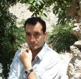
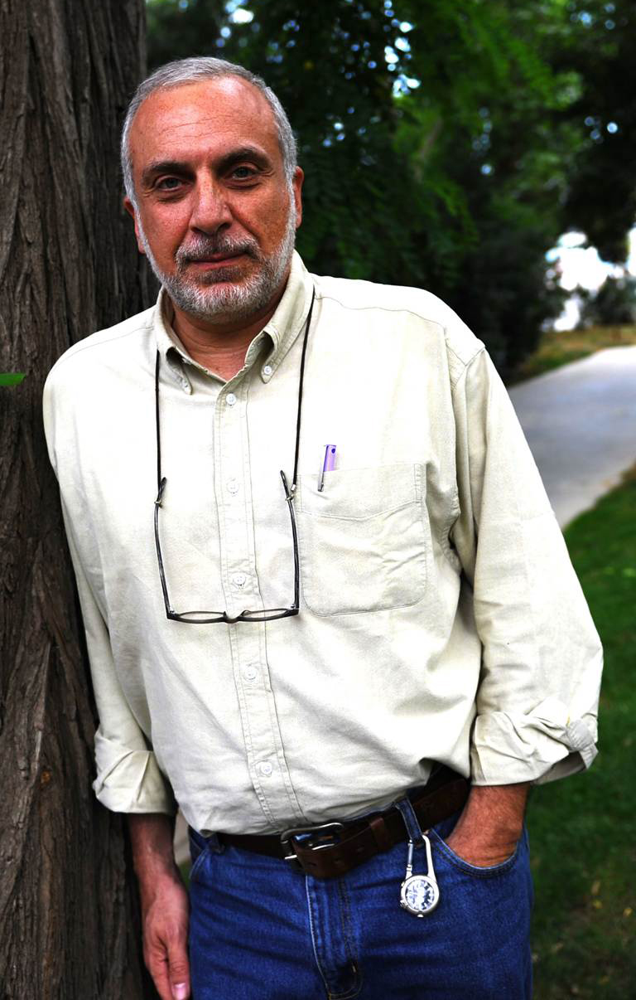
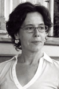
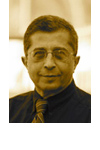
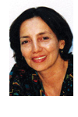
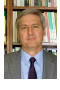
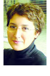
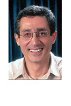
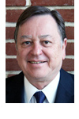

Keyman
Modern
Turkish
Studies
Mission, Vision, and Opportunities
Northwestern's Keyman Program supports the current and future in creating a new knowledge in the field of Turkish studies. The program offers opportunities to foster development of an ambitious, innovative, balanced, nonpartisan, and interdisciplinary platform for connecting with, investing in, and studying modern Turkey.
In light of Turkey's ever more important role in both academia and the international arena, the Keyman Modern Turkish Studies Program has established itself as a forum for candid and constructive dialogue among faculty and students from Northwestern University and the surrounding scholarly community. The Keyman Program reflects a broad range of topical and theoretical orientations in addressing a rich variety of themes on modern Turkish policy. Its goals include promoting informed conversations about Turkish studies from a variety of conceptual and theoretical perspectives and, in particular, inspiring students to learn about modern Turkey.
Distinguished Speakers,
Conferences, and Outreach Events
The Keyman Program's rich, diverse programming introduces the Northwestern communicty to key issues about modern Turey and the international system through a variety of speakers on topics related to the social sciences, the humanities, communication, the arts, and other fields.
Upcoming Events
'Resistance Everywhere:' Political Reverberations of the Gezi Resistance in Turkey
Asli Iğsız (New York University) & Mert Arslanalp (Political Science)
Monday, May 19 at 12pm | University Hall #201
Social Conflict and Development in Modern Turkey
Murat Arsel, Keyman visiting scholar, ISS at Erasmus University Rotterdam
Thursday, May 29 at 5pm | Buffett Center
Visiting Scholars and Affiliates
The program welcomes both young and established scholars from Turkey to teach and pursue research at Northwestern.
2014 Keyman Scholar
-

Murat Arsel is a broadly trained human geographer, specialized in the political economy of environmental change and societal transformation, paying particular attention to natural resource conflicts, rural and agrarian development, and state-society relationships. Much of his empirical has focused on Turkey, with developing interests in (Western) China and Latin America (particularly Ecuador).
He received his PhD from Cambridge in the Environment, Society and Development research cluster of the Department of Geography. He also has an MPhil in Environment and Development from Cambridge, an MSc in Politics of the World Economy from the London School of Economics, and a BA in Economics and Government from Clark University. Before taking up his current position at the ISS in Netherlands, he was based at the University of Chicago as a Lecturer and Research Associate in Environmental Studies. He is currently a member of the editorial board of the interdisciplinary development studies journal Development and Change.
Spring 2014 courses at Northwestern:
1. Political ecology of development: This course provides a broad overview of the interdisciplinary literature on political ecology to discuss how processes of socio-economic development shape nature-society relations. Particular attention will be paid to contemporary political economic dynamics, especially the dominance of 'neoliberal' economic policies, and their impact on our understanding of sustainable development. By reviewing current debates on payments for environmental services, 'land grabbing', food security, etc., the course will also discuss the relationship between attempts to create policies for sustainable development and various environmental struggles taking place in developing countries.
2. Environmental politics in the Middle East: This one is less common in Turkish/Middle Eastern studies programs, mainly because the literature on environmental politics is still in its infancy. Partly due to the relatively 'advanced' state of environmental studies on Turkey and partly because of the context in which this course is being taught, I would pay particular attention to Turkey but also cover various issues relating to energy, water and other natural resources and how these feed into dominant (but often vary problematic) narratives on conflict, development and modernity in the broader region.
Past Keyman Scholars
-

Soli Özel (2013 Keyman Scholar) is a professor of international relations and political science at Istanbul Kadir Has University. He is currently Fisher Family Fellow at the Kennedy School of Government of Harvard University. Professor Ozel received his B.A. at Bennington College, M.A. from Johns Hopkins University School of Advanced International Studies (SAIS), and Ph.D. in political science from the University of California, Berkeley. Ozel taught at U.C. Santa Cruz, SAIS, University of Washington, Hebrew University, and Bogazici University in Istanbul. He was a fellow at St. Antony's College at Oxford in the spring of 2002, and he was a senior visiting fellow at the European Union Institute for Security Studies in the fall of the same year. Ozel's articles and opinion pieces appear in a wide variety of leading newspapers in Turkey and elsewhere around the world. Currently, he is a columnist for Haberturk newspaper, a frequent contributor to The Washington Post's "Post Global", and the former editor of the Turkish edition of Foreign Policy. Most recently, he co-authored the report Rebuilding a Partnership: Turkish- American Relations For a New Era? with Dr. Suhnaz Yilmaz and Abdullah Akyuz.
-

Meltem Ahiska (2012) is associate professor of sociology at Boğaziçi University, Istanbul. Her current research is on the emergence of Turkey as a nation-state in particular, and the nature of modernity in general. Her earlier research addresses the forms of communication developed by the Turkish governing elite in the first half of the twentieth century to “Westernize” the country and to create a national community where in fact none existed. She has published a book of poems, Havalandırma ,and co-curated exhibitions. In addition to her many articles, essays, and poems, she is the author most recently of Occidentalism in Turkey: Questions of Modernity and National Identity in Turkish Radio Broadcasting.
-

Cem Behar (2011) is a Professor of Economics and Vice-President in charge of Academic Affairs at Boðaziçi University, Istanbul, Turkey. He has a double scholarly identity: his publications on late Ottoman social and family history include Istanbul Households, Marriage, Family and Fertility 1880–1940 (Cambridge, 1991). As a musicologist and historian of Ottoman music he has authored many scholarly publications: Ali Ufkî ve Mezmurlar (Istanbul, 1990), Zaman, Mekân, Müzik – Klasik Türk Musikisinde Eðitim (Meþk), Ýcra ve Aktarým (Istanbul, 1993) and Aþk olmayýnca meþk olmaz (Istanbul, 2003). He will teach two courses in spring 2011: Cities and Societies in the Middle East (WCAS) and a seminar on non-Western Musical traditions (Bienen School of Music), with a particular focus on Turkey and the Middle East.
-

Şule Kut (2010) is dean of the Faculty of Economics and Administrative Sciences in Istanbul Bilgi University. Her teaching and research interests include foreign policy analysis, Turkish foreign policy with emphasis on the Balkans, the Caucasus and Central Asia, Turkish-EU and Turkish-U.S. relations as well as Balkan politics. She is the author of four books and more than thirty articles in English and Turkish. Kut is the president of the Turkish Political Science Association and an elected member of the Executive Committee of the International Political Science Association. She received her MA and PhD in political science from the State University of New York in Binghamton. Kut is teaching a course on Turkish Politics and a course on Turkish Foreign Policy in the winter quarter. She gave the talk What is So New About “New Turkish Foreign Policy”? at the Faculty & Fellows Colloquium.
-

Sibel Bozdoğan (2009) has taught architectural history and theory courses at Rensselaer Polytechnic Institute, MIT, and Harvard University’s Graduate School of Design. She has served as the director of liberal studies at the Boston Architectural Center and teaches in the Graduate Architecture Program of Bilgi University in Istanbul. Her interests range from cross-cultural histories of modern architecture in Europe, the United States, the Mediterranean and the Middle East to critical investigations of technology, modernity and national identity as they have informed the culture and production of architecture in Turkey and across the globe. She has published articles on these topics, co-authored a monograph on Turkish architect Sedad Hakki Eldem, and co-edited an interdisciplinary volume, Rethinking Modernity and National Identity in Turkey. Her Modernism and Nation Building: Turkish Architectural Culture in the Early Republic (University of Washington Press) won the 2002 Alice Davis Hitchcock Award of the Society of Architectural Historians and the Koprulu Book Prize of the Turkish Studies Association. Bozdoğan taught two courses at Northwestern, a lecture course on “Modern Architecture and National Identity: Ottoman/Turkish Case in Global Context” and a seminar on “Istanbul: From Imperial Capital to Global City.” She also presented at a Buffett Center Faculty & Fellows Colloquium; her talk was titled Urban Landscapes of Global Modernity in Istanbul.
-

Şevket Pamuk (2008) is one of the most prominent historians of Ottoman and Turkish economic history. He is a professor of economics and economic history at the Ataturk Institute for Modern Turkish History, which is part of Bogaziçi University in Istanbul, Turkey. His publications in English include: Ottoman Empire and European Capitalism, 1820-1913: Trade, Investment, and Production (1987); History of Middle East Economies in the Twentieth Century (1998); Mediterranean Response to Globalization before 1950 (2000), co-edited with Jeffrey G. Williamson; and Monetary History of the Ottoman Empire (2000). Professor Pamuk’s two courses at Northwestern were “Turkey and Modernity,” offered through the Department of History, and “Economic History of the Middle East Since 1800,” offered by the Department of Economics. His presentation at the Buffett Center Faculty and Fellows Colloquium was Export Oriented New Industrial Centers across Anatolia.
-

Yeşim Burul Seven (2007) served as an adjunct professor of media and communications at Istanbul Bilgi University, Turkey, where she taught cultural studies, film studies and mass communication theories. Her research defines and analyses the new cultural space created by young filmmakers, musicians and authors of Turkish origin in Germany. Additional research interests include the formation and representation of cultural identities and popular music studies. She is a founding member of NECS, the European Network for Cinema and Media Studies. She has published articles on Turkish-German cinema, migrant filmmakers & musicians and Turkish popular culture. She has also been a film critic and radio producer/presenter in Istanbul, writing for monthly film magazines and producing the weekly radio show “Sinefil” at Açk Radyo (Open Radio). Seven taught two courses during spring 2007: “Identities in Turkish Film and Television” and “Turkish Cinema.” She also presented her work on Turkish cinema at a Buffett Center Faculty & Fellows Colloquium.
-

Haldun Gülalp (2006), the inaugural Keyman Visiting Professor, was professor of sociology at Bogaziçi University in Istanbul. He holds a PhD in economics from the University of Ankara and a PhD in sociology from the State University of New York at Binghamton. He has written a large number of books and articles in both Turkish and English, including Kimlikler Siyaseti: Türkiye'de Siyasal İslamın Temelleri (Politics of Identities: Foundations of Political Islam in Turkey). He taught two courses in spring 2006. The first, “Islam and Secularism: Iran and Turkey,” was team-taught with Fariba Zarinebaf in the Department of History. The other course, cross-listed between sociology and political science, was called “Religion and Nationalism.” In 2007, Haldun Gülalp became the Director of the Center for Global Studies at the Yıldız Technical University in Istanbul.
-

Ahmet Evin (2005), the founding dean of Faculty of Arts and Social Sciences at Sabanci University, received his BA in English and Comparative Literature in 1966 and his PhD in Middle East Studies and Cultural History in 1973 from Columbia University. Prior to his appointment at Sabanci University, he taught at New York University, Harvard University, Hacettepe University (Ankara), University of Pennsylvania (where he also served as director of the Middle East Center), University of Hamburg, and Bilkent University in Ankara (where he headed the Department of Political Science). As director of education of the Aga Khan Trust for Culture, a Geneva-based international development foundation, he coordinated the program for Islamic Architecture at Harvard University and the Massachusetts Institute of Technology, and assisted in the development of architectural education in Asia and Africa. With the European Commission's support, Evin initiated a policy dialogue on the future of European architecture, EU's eastward expansion, its Mediterranean policy, and the customs union agreement with Turkey. He currently works on current foreign policy issues related to the European enlargement, its significance for Turkey and the region as well as its effect on Transatlantic relations.
Grants and Fellowships
The Buffett Center, with generous support from the Keyman Modern Turkish Studies Program, announces a competition for research grants in modern Turkish studies for Northwestern faculty, undergraduates, and graduate students. (Graduate students must be Affiliates of the Buffett Center.) Research proposals for individual and group projects are invited in all disciplines of the humanities and social sciences. Applicants may place the proposed work in an interdisciplinary context by explaining its relevance to modern Turkey. Projects may build on the work of existing research or they may be an entirely new initiative, as long as they are on modern Turkey. Proposals indicating collaboration with Turkish institutions and colleagues will be given priority.
Webcasts
Click on the images below to view videos of talks.
Sinan Ciddi
Uncertainties following the Arab Spring: Considering Turkey as a Model
Safek Pavey
Participating in Politics in the Middle East as a Disabled Woman
Maureen Freely
Discusses writing about Turkey for an Anglophone audience and conveying the Turkey she loves
Timur Kuran
Economic and Political Underdevelopment in the Middle East: The Role of Islamic Law
Jenny White
Her Latest Novel The Winter Thief
Bulent Aliriza
Turkey’s Changing Foreign and Energy Policy Priorities
Sükrü Hanioglu
Atatürk: An Intellectual Biography
Giving
Gifts to the Keyman Program provide essential support for these important initiatives. If you would like to make a contribution or learn more about how your generosity can make a difference, please contact:
Ivan Adames at 847.467.0351 or ivan.adames@northwestern.edu
1902 Sheridan Road, Evanston
Evanston, IL 60208-4005
Phone: 847/467-1152 | Fax: 847/467-1996
Email:
turkishstudies@northwestern.edu